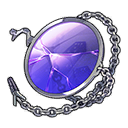
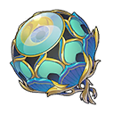
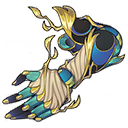
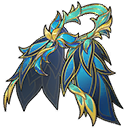

추천 광추
어떤 에이언즈의 몰락
공격마다 공격력 +16%
효과 자세히
4스택 최대 +64%. 자신이 약점 격파 시 피해 +24% 2턴.
닿을 수 없는 저편
치확·HP 최대치 +18%
효과 자세히
피격·HP 소모 → 다음 공격 피해 +24%.
비밀 맹세
상시 피해 +40% · 저HP 추가 피해
효과 자세히
적의 HP 비율이 장착자 이상이면 피해 +40% 추가.
과거의 핏자국
치확 +20% · 스킬·필살기 피해 +40%
효과 자세히
피해 증가 대상은 전투 스킬과 필살기.
추천 유물
지식의 바다에 빠진 학자 4 · 뭇별 경기장 2
- 머리

주옵션HP부옵션치명타 확률 · 치명타 피해 · 속도 · 공격력% · HP% - 손
 주옵션공격력부옵션치명타 확률 · 치명타 피해 · 속도 · 공격력% · HP%
주옵션공격력부옵션치명타 확률 · 치명타 피해 · 속도 · 공격력% · HP% - 몸통
 주옵션치명타 확률 / 치명타 피해부옵션치명타 확률 (주옵션 제외) · 치명타 피해 (주옵션 제외) · 속도 · 공격력% · HP%
주옵션치명타 확률 / 치명타 피해부옵션치명타 확률 (주옵션 제외) · 치명타 피해 (주옵션 제외) · 속도 · 공격력% · HP% - 다리
 주옵션속도 / 공격력%부옵션치명타 확률 · 치명타 피해 · 속도 (주옵션 제외) · 공격력% (주옵션 제외) · HP%
주옵션속도 / 공격력%부옵션치명타 확률 · 치명타 피해 · 속도 (주옵션 제외) · 공격력% (주옵션 제외) · HP% - 구체
 주옵션번개 속성 피해부옵션치명타 확률 · 치명타 피해 · 속도 · 공격력% · HP%
주옵션번개 속성 피해부옵션치명타 확률 · 치명타 피해 · 속도 · 공격력% · HP% - 매듭
 주옵션공격력%부옵션치명타 확률 · 치명타 피해 · 속도 · HP%
주옵션공격력%부옵션치명타 확률 · 치명타 피해 · 속도 · HP%
이 조합을 추천하는 이유
학자 필살기 후 전투 스킬 추가 강화. 뭇별 치확 70% → 스킬 피해 +20%.
지식의 바다에 빠진 학자 4 · 뭇별 경기장 2
- 머리 주옵션HP부옵션치명타 확률 · 치명타 피해 · 속도 · 공격력% · HP%
- 손
주옵션공격력부옵션치명타 확률 · 치명타 피해 · 속도 · 공격력% · HP%
- 몸통
주옵션치명타 확률 / 치명타 피해부옵션치명타 확률 (주옵션 제외) · 치명타 피해 (주옵션 제외) · 속도 · 공격력% · HP%
- 다리
주옵션속도 / 공격력%부옵션치명타 확률 · 치명타 피해 · 속도 (주옵션 제외) · 공격력% (주옵션 제외) · HP%
- 구체
주옵션공격력%부옵션치명타 확률 · 치명타 피해 · 속도 · HP%
- 매듭
주옵션공격력%부옵션치명타 확률 · 치명타 피해 · 속도 · HP%
이 조합을 추천하는 이유
같은 학자 장비에서 공격력 구체를 쓰는 선택입니다.
장수를 원하는 제자 4 · 창공 전선 그라모스 2
- 머리

주옵션HP부옵션치명타 확률 · 치명타 피해 · 속도 · 공격력% · HP% - 손

주옵션공격력부옵션치명타 확률 · 치명타 피해 · 속도 · 공격력% · HP% - 몸통

주옵션치명타 확률 / 치명타 피해부옵션치명타 확률 (주옵션 제외) · 치명타 피해 (주옵션 제외) · 속도 · 공격력% · HP% - 다리
 주옵션속도부옵션치명타 확률 · 치명타 피해 · 공격력% · HP%
주옵션속도부옵션치명타 확률 · 치명타 피해 · 공격력% · HP% - 구체
 주옵션번개 속성 피해부옵션치명타 확률 · 치명타 피해 · 속도 · 공격력% · HP%
주옵션번개 속성 피해부옵션치명타 확률 · 치명타 피해 · 속도 · 공격력% · HP% - 매듭
 주옵션공격력%부옵션치명타 확률 · 치명타 피해 · 속도 · HP%
주옵션공격력%부옵션치명타 확률 · 치명타 피해 · 속도 · HP%
이 조합을 추천하는 이유
제자 HP 소모·피격 시 치확 +8%, 최대 2중첩. 그라모스 전투 속도 135/160 조건.
이 정도면 잘 키웠다
선택한 세팅 기준 · —는 확인된 수치 없음
학자와 번개 피해 구체를 쓰는 기본 세팅입니다.
| 스탯 | 추천 스탯 | 준종결 | 종결 |
|---|---|---|---|
| 공격력 | 3000 | — | — |
| 속도 | 133.4+ | — | — |
| 치명타 확률 | 80% | — | — |
| 치명타 피해 | 110% | — | — |
세팅 기준·출처
공개 가이드에서 이 세팅의 준종결 또는 종결 수치를 확인하지 못했습니다.
공격력 구체를 쓸 때의 공격력 목표입니다.
| 스탯 | 추천 스탯 | 준종결 | 종결 |
|---|---|---|---|
| 공격력 | 3500 | — | — |
| 속도 | 133.4+ | — | — |
| 치명타 확률 | 80% | — | — |
| 치명타 피해 | 110% | — | — |
세팅 기준·출처
공개 가이드에서 이 세팅의 준종결 또는 종결 수치를 확인하지 못했습니다.
- 준종결 속도 전투 중
체력 소모와 피격으로 조건부 치명타 확률을 얻습니다.
| 스탯 | 추천 스탯 | 준종결 | 종결 |
|---|---|---|---|
| 공격력 | 2400~2800+ | — | — |
| 속도 | 134 | 135[1]자체 계산 · 그라모스 2세트는 전투 속도 135 이상에서 1단계 피해 증가 +12%가 발동합니다. 속도 버프 적용 후 기준.자체 계산 | — |
| 치명타 확률 | 60~70%+ | — | — |
| 치명타 피해 | 120~140%+ | — | — |
세팅 기준·출처
제자의 치명타 확률은 HP 소모·피격으로 중첩되므로 전투 중 수치를 함께 확인합니다. 이 세팅의 별도 종결 수치는 확인하지 못했습니다.
스탯 조건과 각주
- 속도 · 준종결 자체 계산 · 그라모스 2세트는 전투 속도 135 이상에서 1단계 피해 증가 +12%가 발동합니다. 속도 버프 적용 후 기준. ↑
성혼과 추천 돌파
2돌 자가 정화 · 6돌 저HP 필살기 확산 피해 강화.
1자신 HP ≤ 50% → 스킬 피해 +10%
필사즉생
2전투 스킬·필살기 → 자가 정화추천
자신의 디버프 1개 해제.
3전투 스킬 +2 · 일반 공격 +1
스킬·일반 공격 레벨 상한 각각 15·10.
4전투 초반 치명상 회피 1회
2턴 안에 치명상 피격 → HP 최대치의 25%까지 회복.
5필살기·특성 +2
필살기·특성 레벨 상한 각각 15.
6자신 HP ≤ 50% → 필살기 피해 +20%추천
인접 적 필살기 배율을 주 대상과 동일하게 적용.
추천 파티


기본 운영과 행적
실드로 낮은 HP 유지
실드 확보 → 전투 스킬로 HP 소모 → 특성으로 잃은 HP 비례 피해 확보.
- 실드가 유지되는 동안 낮은 HP에서 공격. 성혼 6은 HP 50% 이하에서 필살기 확산 피해 강화.
행적 육성 순서
전투 스킬 → 필살기·특성 → 일반 공격
아하 속도 계산기 →기준과 출처 · 2026-11-27
4.7 데이터 · Prydwen 장비 참고 · 자료실 편성 예시